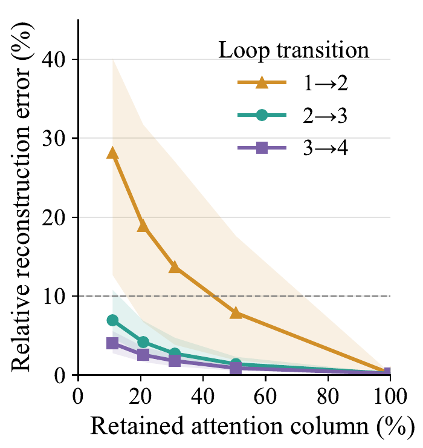
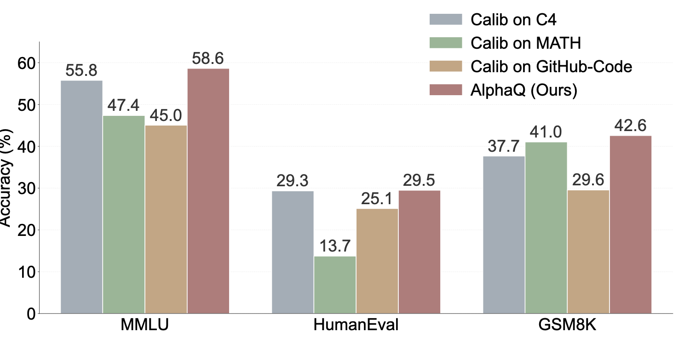

Wanqi Yang
I am a PhD student at the ELLIS Institute Tübingen and the Max Planck Institute for Intelligent Systems, supervised by Dr. Shiwei Liu.
Before starting my PhD, I worked at Qualcomm on multimodal foundation-model inference for mobile and PC platforms, and at DJI on heterogeneous inference for autonomous-driving perception systems.
I studied Computational Engineering at TU Darmstadt after completing my undergraduate studies at Beijing Jiaotong University.
Research interests
I am interested in the intersection of machine learning and systems. Broadly, I aim to improve the efficiency, deployability, and scalability of machine learning through both model-level and systems-level methods. My research focuses on:
- Inference optimization for frontier models: quantization and sparsity
- Machine learning systems design: inference engines and AI compilers
- Agent design for machine learning systems optimization
I am also interested in applying these methods and insights across the spectrum from edge devices to large-scale AI systems.
News
- AlphaQ was accepted to NeurIPS 2026.
- Started my PhD at the ELLIS Institute Tübingen and the Max Planck Institute for Intelligent Systems.
Selected work
